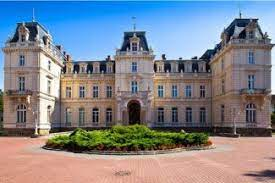

ТОП-5 самых красивых дворцов Львовской области
Достопримечательности Львовской области круглогодично привлекают туристов. Наиболее популярным маршрутом
является изучение древних замков.
Стоит отметить, что любителям архитектуры есть, что посмотреть во
Львовской области. Помимо старинных замков в этом регионе можно найти и удивительные шикарные дворцы.
Дворец графов Потоцких во Львове
Одним из самых восхитительных является Дворец Потоцких, расположенный на улице Коперника. В конце XIX века представители одной из самых богатых семей на территории Украины и Польши возвели на месте охотничьего домика дворец для приема гостей, проведения торжественных встреч и пышных балов. Поскольку, начавший строительство дворца Альфред II был поклонником французской архитектуры он пригласил для строительства доврца архитектора Людвига де Верни и украинского зодчего Юлиана Цибульского. К сожалению, хозяин не успел увидеть завершенный дворец.
Дворец Потоцких во Львове является одним из самых интересных и уникальных памятников старинной архитектуры города. Здание имеет Н-образную форму, окрашено в светлый цвет. Фасад оштукатурен, декорированный роскошной лепниной. Парадный вход во дворец – арочного типа с ионическими колоннами. Внутри поражает мастерское оформление с помощью декоративной лепки, позолоты, разноцветного мрамора, живописи. Здесь есть несколько комнат – Голубая (бывшая столовая графа), Зеркальная, Красная и Кабинет Ордината, каждая из которых имела собственное предназначение.
Дворец графа Бадени в Буске
Дворец был построен в 1810 году в Буске в классическом европейском стиле. Казимир Бадени приобрел его в 1876 году, перестроил в стиле неоренессанса и значительно увеличил размеры дома. Дворец Бадени выполнял роль фамильного гнезда древнего галицкого рода. В середине ХХ века изысканный дворец перешел во владение воинской части, что стало губительным для внутренней отделки здания и драгоценного интерьера. При этом, новые владельцы не допустили полного упадка исторического памятника. Экстерьер и богатая лепнина были отреставрированы.
Дворец Бруницкого в Великом Любене
Дворец в Великом Любене появился еще в 1845 году на месте старинного замка XVII века. Его построили помещики Бруницкие, которые владели местным курортом. Дворец представляет собой небольшое здание, центральная часть которого имеет два этажа, а остальное помещение одноэтажное. Фасад украшен гербом Бруницких и Шимановских. Реконструкция дворца прошла в 2006 году за средства швейцарца Роберта Гайнца Готца. Именно благодаря ему имение вновь обрело роскошный вид, к тому же, сохранилась часть убранств.
Дворец баронов Гределей в Сколе
Построенный в 1886 году братьями Гределями дворец по сей день восхищает своей архитектурой. Дворец был создан по личному проекту австрийского барона и не относится ни к одному из архитектурных стилей. Уютный и комфортабельный, он рассчитан для большого семейства и слуг. Две полу-башни украшают дворец. Они напоминают турецкие минареты. В фасаде башни установлены часы. Особое изящество придают зданию псевдо-балконы у основания крыши и на бельэтажах.
Дворец Марсов в Судовой Вишне
Дворец Марсов в городе Судовая Вишня появился в 18 веке. Необычное название происходит от фамилии владельца имения – Яна Марса. До недавнего времени историческое здание было памятником архитектуры и охранялось государством. Однако дворец сильно пострадал из-за масштабного пожара и находится сегодня в состоянии руины. От прежнего могущественного двухэтажного здания остались одни лишь стены, которые даже в таком плачевном состоянии свидетельствуют о былой славе и величии дворца.